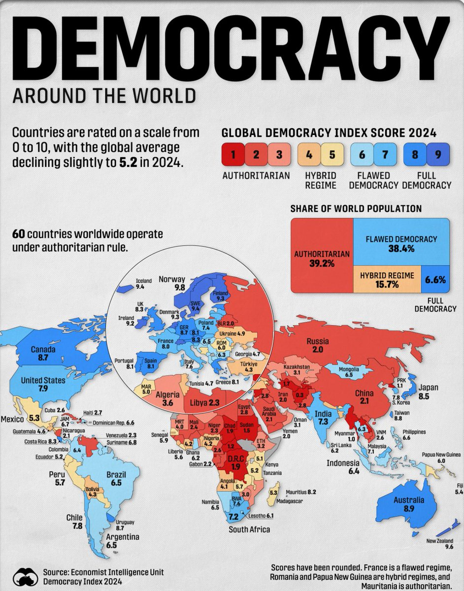

冰棍好烫喵 🍥🧊🍔🍟🍜🍣🍙🍧🍮🍩☕️💊🤤
@bghtnya
RT @_vicwong: 全球平均民主指数下跌到5.2
图片中是2024年60个国家的最新数据。一共有十分，红色代表“专制”，蓝色代表“民主”。
美国为7.9 ，属于缺陷民主；加拿大为8.7 ，属于完整民主；世界上其他国家请自行查看。 …

Vic Wong 黄维克
@_vicwong
全球平均民主指数下跌到5.2
图片中是2024年60个国家的最新数据。一共有十分，红色代表“专制”，蓝色代表“民主”。
美国为7.9 ，属于缺陷民主；加拿大为8.7 ，属于完整民主；世界上其他国家请自行查看。 https://t.co/mPPd4CSPzn https://t.co/KlZeqTK67T